temI ]cn-ÿnXnZn\-Øns‚ `mK-ambn kvIqƒ Akw-ªn-bn¬ \n߃
sNm√nb {]Xn⁄mhmIyß-fmWv apI-fn¬ \¬In-bn-´p-≈-Xv. ]cn-
ÿnXnkwc-£-W-Øns‚ `mK-ambn hr£ssØ \Sp-∂-Xns‚ bp‡n-
sb-s¥∂v \n߃ Nn¥n-®n-´pt≠m?
`qansb Bh-cWw sNbvXn-cn-°p∂ hmbp-hns‚ ]pX-∏mWv
A¥-co£w F∂p \n߃°-dn-bm-a-t√m. CXn¬ HmIvkn-P≥,
Im¿_¨ Utbm-IvsskUv F∂o hmX-I-ß-fm-Wv `qansb
`qan-bpsS ]pX∏v
Page 45
Page 46
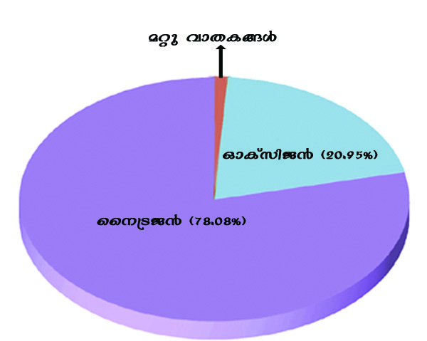
2345678901234567890123456789012123456789012345678901234567890121234567890123456789012345678901212345678901234567890123456789012123456789012345678901234567890121234567890
2345678901234567890123456789012123456789012345678901234567890121234567890123456789012345678901212345678901234567890123456789012123456789012345678901234567890121234567890
2345678901234567890123456789012123456789012345678901234567890121234567890123456789012345678901212345678901234567890123456789012123456789012345678901234567890121234567890
2345678901234567890123456789012123456789012345678901234567890121234567890123456789012345678901212345678901234567890123456789012123456789012345678901234567890121234567890
2345678901234567890123456789012123456789012345678901234567890121234567890123456789012345678901212345678901234567890123456789012123456789012345678901234567890121234567890
2345678901234567890123456789012123456789012345678901234567890121234567890123456789012345678901212345678901234567890123456789012123456789012345678901234567890121234567890
2345678901234567890123456789012123456789012345678901234567890121234567890123456789012345678901212345678901234567890123456789012123456789012345678901234567890121234567890
2345678901234567890123456789012123456789012345678901234567890121234567890123456789012345678901212345678901234567890123456789012123456789012345678901234567890121234567890
2345678901234567890123456789012123456789012345678901234567890121234567890123456789012345678901212345678901234567890123456789012123456789012345678901234567890121234567890
2345678901234567890123456789012123456789012345678901234567890121234567890123456789012345678901212345678901234567890123456789012123456789012345678901234567890121234567890
1
1
1
1
1
1
1
1
1
1
`qan-bpsS ]pX∏v
166
kmaqlyimkv{Xw
kmaqlyimkv{Xw
Poh-Krl-ambn \ne-\n¿Øp-∂-Xn¬ apJy- ]-¶p-h-ln-°p-∂-Xv. Cu
hmX-I-ß-fpsS Af-hns\ \nb-{¥n-°p-∂Xn¬ kky-߃°v kp{]-
[m\ ÿm\-ap-≠v.
kky-߃ Ah-bpsS hf¿®bv-°m-h-iy-amb Du¿Pw kw`-cn-°p-
∂-Xv {]Im-i-kw-t«-j-W-Øn-eq-sS-bm-Wv. CXn-eqsS kky-߃
Im¿_¨ U-tbm-Ivssk-Uv BKn-cWw sNøp-Ibpw A¥-co-£-
Øn-te°v HmIvkn-P≥ ]pd-¥-≈p-Ibpw sNøp-∂p. a\p-jy\pw
a‰p PohPme-߃°pw Bh-iy-amb {]mW-hm-bp-hns‚ Afhv
k¥p-en-X-ambn \ne-\n¿Øp-∂-Xn¬ kky-߃ hln-°p∂ ]¶v
t_m[y-am-bn-t√.
HmIvkn-P≥, Im¿_¨ Utbm-IvsskUv apX-emb hmX-I-ßsf
IqSmsX GsXms°bmWv A¥-co-£-Øn-ep-≈-sX∂pw Ah-tbm-
tcm∂pw GsX√mw hn[-Øn¬ {]m[m-\y-a¿ln-°p-∂p-sh∂pw
t\m°mw.
A¥-co-£-kw-c-N\ (Atmospheric Composition)
`qan-°p-Np‰pw Hcp ]pX∏p t]mse \ne-sIm-≈p∂ \ΩpsS A¥-
co-£-Øn¬ hmX-I-߃, Pemw-iw, s]mSn-]-S-e-߃ F∂n-h AS-
ßn-bn´p≠v. -Chsb `qan-tbmSp tN¿Øp-\n¿Øp-∂Xv `qKp-cp-Xz-
am-Wv.
A¥-co-£-hm-X-I-߃ (Atmospheric Gases)
\¬In-bn-´p≈ Nn{Xw (Nn{Xw 10.1), ]´nI (]´n-I 10.1.) F∂nh
\nco-£n®v A¥-co-£-Ønse {][m\ hmX-I-߃ GsXm-
s°sb∂pw Ah-bpsS B\p-]m-XnI Afsh{X-sb∂pw Xncn-®-
dn-bq.
hmX-I-߃
hym]vXw (%)
ss\{S-P≥
78.08
HmIvkn-P≥
20.95
B¿K¨
0.93
Im¿_¨
U-tbm-IvsskUv
0.037
Hmtkm¨
0.01
\ntbm¨
0.002
loenbw
0.0005
{In]v‰≥
0.0001
ssl{U-P≥
0.00005
skt\m¨
0.00009
Nn{Xw 10.1
]´nI 10.1
Page 47

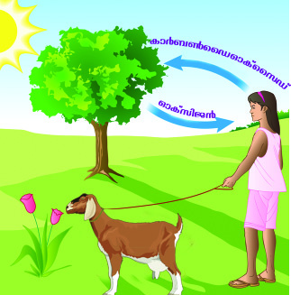
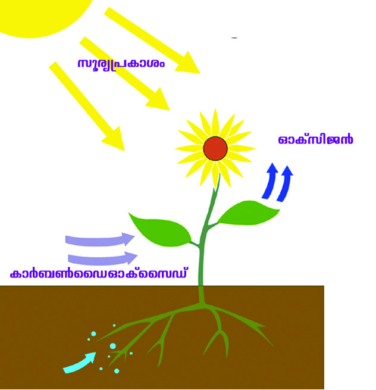
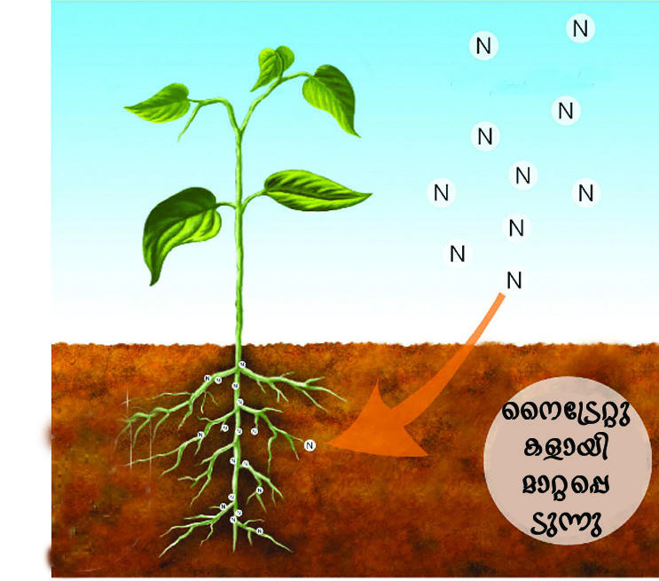
2345678901234567890123456789012123456789012345678901234567890121234567890123456789012345678901212345678901234567890123456789012123456789012345678901234567890121234567890
2345678901234567890123456789012123456789012345678901234567890121234567890123456789012345678901212345678901234567890123456789012123456789012345678901234567890121234567890
2345678901234567890123456789012123456789012345678901234567890121234567890123456789012345678901212345678901234567890123456789012123456789012345678901234567890121234567890
2345678901234567890123456789012123456789012345678901234567890121234567890123456789012345678901212345678901234567890123456789012123456789012345678901234567890121234567890
2345678901234567890123456789012123456789012345678901234567890121234567890123456789012345678901212345678901234567890123456789012123456789012345678901234567890121234567890
2345678901234567890123456789012123456789012345678901234567890121234567890123456789012345678901212345678901234567890123456789012123456789012345678901234567890121234567890
2345678901234567890123456789012123456789012345678901234567890121234567890123456789012345678901212345678901234567890123456789012123456789012345678901234567890121234567890
2345678901234567890123456789012123456789012345678901234567890121234567890123456789012345678901212345678901234567890123456789012123456789012345678901234567890121234567890
2345678901234567890123456789012123456789012345678901234567890121234567890123456789012345678901212345678901234567890123456789012123456789012345678901234567890121234567890
2345678901234567890123456789012123456789012345678901234567890121234567890123456789012345678901212345678901234567890123456789012123456789012345678901234567890121234567890
`qan-bpsS ]pX∏v
167
Ãm≥tU¿Uv VIII
Ãm≥tU¿Uv VIII
A¥-co-£-Ønse P-emwiw (Water in the Atmosphere)
`qan-tbmSp tN¿∂ A¥-co£`mK-ß-fn¬ hfsc Db¿∂ Afhn¬
AS-ßn-bn-´p≈ Hcp LS-I-amWv Pe-X-∑m-{X-Iƒ. _mjv]o-I-cW
{]{In-b-bn-eq-sS- Pew \ocm-hn-bmbn A¥-co-£-Øn¬ FØn-t®-
cp-∂psh∂pw AXv taL-ß-fpsS cq]o-I-c-W-Øn\pw agbv°pw
Imc-W-am-Ip-∂psh∂pw \n߃°dn-bm-at√m. A¥-co-£-Ønse
PemwiØns‚ Afhv F√m-bn-SØpw F√m ka-bØpw Hcp-t]m-
A¥-co£Ønse {][m\ hmX-I-ß-sf√mwXs∂ {]Xy-£-amtbm
]tcm-£-amtbm Pohs‚ \ne-\n¬∏n\v klm-b-I-am-Ip-∂p-≠v.
\¬In-bn-´p≈ Nn{X-߃ (Nn{Xw 10.2) t\m°q. Poh-Pm-e-ß-fpsS
\ne-\n-¬∏n\v ss\{S-P≥, HmIvkn-P≥, Im¿_¨
Utbm-IvsskUv F∂o hmX-I-߃°v F{X-am{Xw
{]m[m-\y-ap-s≠∂v I≠nt√.
{]Im-i-kw-t«-j-W-Øn\v kky-߃
Im¿_¨ U-tbm-IvsskUv D]-tbm-K-s∏-Sp-
Øp∂p.
izk-\-{]-{In-b-bv°mbn a\p-jy\pw a‰p
P¥p-Pm-e-ßfpw HmIvkn-P≥ D]-tbm-K-s∏-
Sp-Øp-∂p.
ss\{S-P≥ ÿnXo-I-c-W-Øn-eqsS kky-h-
f¿®-bv°mbn ss\{S-P≥ D]-tbm-K-s∏-Sp-
Øp∂p.
{]Im-i-kw-t«-jWw
izk-\-{]-{Inb
ss\{S-P≥ ÿnXo-I-cWw
Nn{Xw 10.2
Page 48
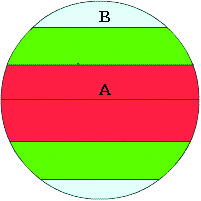

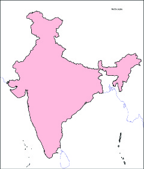

2345678901234567890123456789012123456789012345678901234567890121234567890123456789012345678901212345678901234567890123456789012123456789012345678901234567890121234567890
2345678901234567890123456789012123456789012345678901234567890121234567890123456789012345678901212345678901234567890123456789012123456789012345678901234567890121234567890
2345678901234567890123456789012123456789012345678901234567890121234567890123456789012345678901212345678901234567890123456789012123456789012345678901234567890121234567890
2345678901234567890123456789012123456789012345678901234567890121234567890123456789012345678901212345678901234567890123456789012123456789012345678901234567890121234567890
2345678901234567890123456789012123456789012345678901234567890121234567890123456789012345678901212345678901234567890123456789012123456789012345678901234567890121234567890
2345678901234567890123456789012123456789012345678901234567890121234567890123456789012345678901212345678901234567890123456789012123456789012345678901234567890121234567890
2345678901234567890123456789012123456789012345678901234567890121234567890123456789012345678901212345678901234567890123456789012123456789012345678901234567890121234567890
2345678901234567890123456789012123456789012345678901234567890121234567890123456789012345678901212345678901234567890123456789012123456789012345678901234567890121234567890
2345678901234567890123456789012123456789012345678901234567890121234567890123456789012345678901212345678901234567890123456789012123456789012345678901234567890121234567890
2345678901234567890123456789012123456789012345678901234567890121234567890123456789012345678901212345678901234567890123456789012123456789012345678901234567890121234567890
1
1
1
1
1
1
1
1
1
1
`qan-bpsS ]pX∏v
168
kmaqlyimkv{Xw
kmaqlyimkv{Xw
Nn{X-Øn¬ A, B F∂n-ßs\ tcJ-
s∏-Sp-Øn-bn-´p≈Xv {i≤n-°q.
CXn¬ GXp taJ-e-bnse A¥co-
£-Øn-em-bn-cn°pw IqSp-X¬ Pemw-
iap-≠m-hpI? F¥m-bn-cn°pw CXn-
\p- Im-c-Ww?
C¥y-bnse c≠p ÿe-ß-fmWv
Nn{X-Øn¬ tcJ-s∏-Sp-Øn-bn-´p-≈-
Xv. CXn¬ GXp ÿesØ A¥-
co-£-Øn-em-bn-cn°pw IqSp-X¬
Pemwiap≈Xv? F¥p-sIm≠v?
$
Xncp-h-\-¥-]pcw
h¿°vjo‰v
ta¬∏d™ hkvXp-X-I-fpsS ASn-ÿm-\-Øn¬,
NphsS tN¿Øn-´p≈ h¿°vjo‰v ]q¿Øn-bm-°q.
se-b√. A¥-co£Ønse Pe-Øns‚ Af-hns\ kzm[o-\n-°p∂
LS-I-߃ Fs¥m-s°-bmsW∂v t\m°q.
Db¿∂ -Xm-]-\n-e-bp≈ {]tZ-i-ß-fn¬ _mjv]o-I-c-W-
tØmXv IqSp-X-em-bn-cn-°pw. ChnSß-fnse A¥-co-£-
Øn¬ Pemwiw IqSp-X¬ ImWp-∂p.
D]-cn-Xe Pe-t{km-X- p-I-fmb kap-{Z-߃, \Zn-Iƒ, a‰p
Pem-i-b-߃ F∂n-h-tbm-S-Sp-Øp≈ A¥-co£`mK-ß-
fn¬ Pemwiw IqSp-X-em-bn-cn-°pw.
90° N
90° S
0°
$ U¬ln
s]mSn-]-S-e-߃ (Dust Particles)
hmX-I-߃, Pe-X-∑m-{X-Iƒ F∂n-hbv°v ]pdsa s]mSn-]-S-e-ßfpw
A¥-co£Øns‚ `mK-am-Wv. GsXms° am¿K-ß-fn-eqsSbmWv
apJy-ambpw s]mSn-]-S-e-߃ A¥-co-£-Øn-se-Øn-t®-cp-∂-sX∂p
t\m°q.
66½° N
66½° S
23½° S
23½° N
Page 49


2345678901234567890123456789012123456789012345678901234567890121234567890123456789012345678901212345678901234567890123456789012123456789012345678901234567890121234567890
2345678901234567890123456789012123456789012345678901234567890121234567890123456789012345678901212345678901234567890123456789012123456789012345678901234567890121234567890
2345678901234567890123456789012123456789012345678901234567890121234567890123456789012345678901212345678901234567890123456789012123456789012345678901234567890121234567890
2345678901234567890123456789012123456789012345678901234567890121234567890123456789012345678901212345678901234567890123456789012123456789012345678901234567890121234567890
2345678901234567890123456789012123456789012345678901234567890121234567890123456789012345678901212345678901234567890123456789012123456789012345678901234567890121234567890
2345678901234567890123456789012123456789012345678901234567890121234567890123456789012345678901212345678901234567890123456789012123456789012345678901234567890121234567890
2345678901234567890123456789012123456789012345678901234567890121234567890123456789012345678901212345678901234567890123456789012123456789012345678901234567890121234567890
2345678901234567890123456789012123456789012345678901234567890121234567890123456789012345678901212345678901234567890123456789012123456789012345678901234567890121234567890
2345678901234567890123456789012123456789012345678901234567890121234567890123456789012345678901212345678901234567890123456789012123456789012345678901234567890121234567890
2345678901234567890123456789012123456789012345678901234567890121234567890123456789012345678901212345678901234567890123456789012123456789012345678901234567890121234567890
`qan-bpsS ]pX∏v
169
Ãm≥tU¿Uv VIII
Ãm≥tU¿Uv VIII
Im‰n-eqsS `qan-bn¬\n∂v Db¿Ø-s∏-Sp-∂h.
A·n-]¿hX-ß-fn-eqsS ]pd-Øp-h-cp-∂-h.
D¬°-Iƒ IØp-∂-Xn-eqsS D≠m-Ip∂
Nmcw.
A¥-co-£-Ønse t\¿Ø s]mSn-]-S-e-ßsf
tI{μo-I-cn®v L\o-I-c-W-{]-{Inb IqSp-X-embn \S-°p-∂-Xmbn
\n߃ ]Tn-®n-´p-≠t√m. A¥-co-£-Ønse t\¿Ø s]mSn-]-S-e-
߃ taL-cq-]o-I-c-WsØ klm-bn-°p-∂-Xn-\m¬ Chsb L\o-
I-cWa¿aw (Condensation nuclei ) F∂p hnti-jn-∏n-°m-dp-≠v.
A-¥-co-£-Ønse s]mSn-]-S-e-߃°p≈ {]m[m-\y-sa¥v?
Fh-dÃv sImSp-apSn Ib-dp∂ ]¿Δ-Xm-tcm-l-I¿ HmIvkn-P≥ knen-
≠-¿ H∏w Icp-Xp-∂-sX-¥n-\mWv?
`utam-]-cn-X-e-Øn¬\n∂v ]Xn-\m-bn-c-tØmfw Intem-
ao-‰¿ Dbcw hsc A¥-co£Øns‚ km∂n-[y-ap-≠v.
F∂m¬ BsI A¥-co-£-hm-bp-hns‚ 97 iX-am-\-
tØmfw ÿnXnsNøp-∂Xv `utam-]-cn-X-e-
Øn¬\n∂v GI-tZiw 29 Intem-ao-‰¿ Db-cw hsc-
bm-sW∂v IW-°m°s∏-Sp-∂p. Dbcw IqSp-t¥m-dpw
hmX-I-ß-fpsS Afhv Ipd™p hcp-∂p.
lcn-X-Kr-l-am-Ip∂ A¥-co£w
ssiXy-ta-Jem cmPy-ß-fn¬ sI´n-S-߃ \n¿an-°p-
tºmƒ kv^SnIw IqSp-X-embn D]-tbm-Kn-°m-dp-≠v.
CsX-¥n-\m-sW-∂-dn-bmtam? kv^SnIXe-߃°v
kutcm¿PsØ (kuc-Xm-]-\-sØ) D≈n-te°p IS-
Øn-hn-Sm\pw `ua-hn-In-c-WsØ XS-™p-
\n¿Øm\pw Ign-hp-≠v. CØ-c-Øn¬ sI´n-S-
߃°p≈n¬ Xm]w Ipd-bmsX \ne-\n¿Øm\m-
Ip-∂p. kv^Sn-I-Øns‚ Cu KpW-hn-ti-jsØ
ssiXy-cm-Py-߃ Im¿jn-I-ta-J-e-bn¬ Fß-s\-
bmWv {]tbm-P-\-s∏-Sp-Øp-∂Xv F∂p Nn{X-Øn¬ (Nn{Xw 10.3)
\n∂p a\- n-em-°mw. `ua-hn-In-c-WsØ XS™p \n¿Øn kky-
lcn-X-Krlw
Nn{Xw 10.3
KT 491-3/Social Sci.-8(M) Vol-II
Page 50
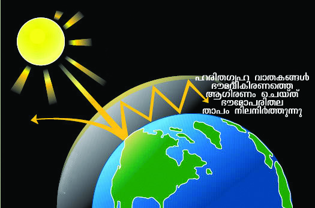
2345678901234567890123456789012123456789012345678901234567890121234567890123456789012345678901212345678901234567890123456789012123456789012345678901234567890121234567890
2345678901234567890123456789012123456789012345678901234567890121234567890123456789012345678901212345678901234567890123456789012123456789012345678901234567890121234567890
2345678901234567890123456789012123456789012345678901234567890121234567890123456789012345678901212345678901234567890123456789012123456789012345678901234567890121234567890
2345678901234567890123456789012123456789012345678901234567890121234567890123456789012345678901212345678901234567890123456789012123456789012345678901234567890121234567890
2345678901234567890123456789012123456789012345678901234567890121234567890123456789012345678901212345678901234567890123456789012123456789012345678901234567890121234567890
2345678901234567890123456789012123456789012345678901234567890121234567890123456789012345678901212345678901234567890123456789012123456789012345678901234567890121234567890
2345678901234567890123456789012123456789012345678901234567890121234567890123456789012345678901212345678901234567890123456789012123456789012345678901234567890121234567890
2345678901234567890123456789012123456789012345678901234567890121234567890123456789012345678901212345678901234567890123456789012123456789012345678901234567890121234567890
2345678901234567890123456789012123456789012345678901234567890121234567890123456789012345678901212345678901234567890123456789012123456789012345678901234567890121234567890
2345678901234567890123456789012123456789012345678901234567890121234567890123456789012345678901212345678901234567890123456789012123456789012345678901234567890121234567890
1
1
1
1
1
1
1
1
1
1
`qan-bpsS ]pX∏v
170
kmaqlyimkv{Xw
kmaqlyimkv{Xw
h-f¿®-bv-°m-h-iy-amb Xm]w D≈n¬
\ne-\n¿Øm≥ CØcw \n¿Ωn-Xn-
IƒsIm≠v Ignbp-∂p. AXn-\m¬
Chsb lcn-X-Kr-l-߃ (Green
Houses) F∂mWp hnfn-°p-∂-Xv.
A¥-co-£-Øn-e-S-ßn-bn-´p≈ Nne
hmX-I-߃°pw kuc-Xm-]-\sØ
IS-Øn-hn-Sm\pw `ua-hn-In-c-WsØ
BKn-cWw sNøm\pw Ign-hp≠v.
Im¿_¨ U-tbm-Ivssk-Uv, aosY-bv≥,
Hmtkm¨ XpS-ßnb hmX-I-ßfpw
\ocmhnbpw `qan-bn¬ \n∂p-b-cp∂
`ua-hn-In-c-WsØ BKn-cWw sNbvXv `qan-tbm-S-SpØp≈ A¥-
co-£Ønse -Xm-]-\ne Ipd-bmsX \ne-\n¿Øp-∂p. Cu {]Xn-`m-
ksØ lcn-X-Kr-l-{]-`m-h-sa∂pw (Green House Effect) CXn\v Imc-
W-am-Ip∂ hmX-I-ßsf lcn-X-Kr-l-hm-X-I-߃ (Green House
Gases) F∂p-amWv ]dbp∂Xv.
taLm-hr-X-amb Znh-k-ß-fn¬ NqSv IqSp-X¬ A\p-`-h-s∏-Sm≥
Imc-W-sa¥v?
lcn-X-Kr-l-{]-`mhw
Nn{Xw 10.4
A¥-co-£-Ønse lcn-X-Kr-l-{]-hmlw Pohs‚ \ne-\n¬∏n\v
A\n-hm-cy-am-sW-¶nepw lcn-X-Kr-l-hm-XI-ß-fn-ep-≠m-Ip∂ {Iam-
Xo-X-ambn h¿[-\hv A¥-co-£-Xm-]-\ne h¿≤n-°p-∂-Xn\v Imc-
W-am-Ip-∂p.
a\p-jys‚ Nne CS-s]-S-ep-I-fn-eq-sS-bmWv lcn-X-Kr-l-hm-X-I-߃
IqSp-X-embpw A¥-co-£-Øn-se-Øn-t®-cp-∂-Xv. GsXms°bmWv
lcn-X-Kr-l-hm-X-I-ß-fpsS t{kmX- p-Iƒ F∂p \n߃°-dn-
bmtam?
A·n-]¿hXkvt^mS\w, ssPh-h-kvXp-°-fpsS Po¿W\w XpS-
ßnb kzm`m-hnI am¿Kß-fn-eq-sSbpw [mXp C‘-\-߃ IØn-
°¬, acw-ap-dn-°¬ XpS-ßnb {]h¿Ø-\-ß-fn-eq-sSbpw lcnX
Krl-hm-X-I-߃ A¥-co-£-Øn-se-Øp-∂p.
h¿[n-®-tXm-Xn¬ lcnXKrl-hm-XI߃ A¥-co-£-Øn-se-Øn-
t®-cp-∂-Xn\p Imc-W-amb Nne -{]-h¿Ø-\-ßfmWv Nn{X-Øn¬
(Nn{Xw 10.5).
Page 51
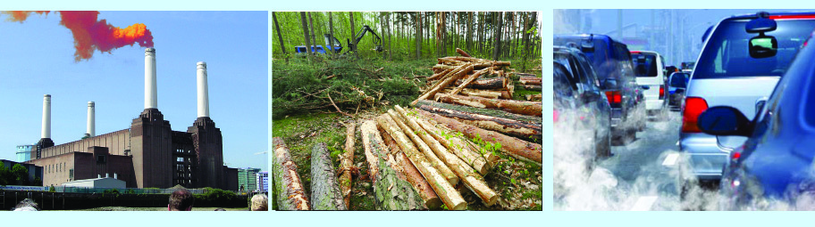


2345678901234567890123456789012123456789012345678901234567890121234567890123456789012345678901212345678901234567890123456789012123456789012345678901234567890121234567890
2345678901234567890123456789012123456789012345678901234567890121234567890123456789012345678901212345678901234567890123456789012123456789012345678901234567890121234567890
2345678901234567890123456789012123456789012345678901234567890121234567890123456789012345678901212345678901234567890123456789012123456789012345678901234567890121234567890
2345678901234567890123456789012123456789012345678901234567890121234567890123456789012345678901212345678901234567890123456789012123456789012345678901234567890121234567890
2345678901234567890123456789012123456789012345678901234567890121234567890123456789012345678901212345678901234567890123456789012123456789012345678901234567890121234567890
2345678901234567890123456789012123456789012345678901234567890121234567890123456789012345678901212345678901234567890123456789012123456789012345678901234567890121234567890
2345678901234567890123456789012123456789012345678901234567890121234567890123456789012345678901212345678901234567890123456789012123456789012345678901234567890121234567890
2345678901234567890123456789012123456789012345678901234567890121234567890123456789012345678901212345678901234567890123456789012123456789012345678901234567890121234567890
2345678901234567890123456789012123456789012345678901234567890121234567890123456789012345678901212345678901234567890123456789012123456789012345678901234567890121234567890
2345678901234567890123456789012123456789012345678901234567890121234567890123456789012345678901212345678901234567890123456789012123456789012345678901234567890121234567890
`qan-bpsS ]pX∏v
171
Ãm≥tU¿Uv VIII
Ãm≥tU¿Uv VIII
A¥-co-£-Øn¬ Im¿_¨ Utbm-Ivssk-Uns‚ Afhv IqSp-∂-
Xn\v h\-\-io-I-cWw Imc-W-am-Ip-∂p. Fßs\?
ta¬∏-d™ Xc-Øn¬ kzX-{¥-am-°-s∏-Sp∂ lcn-X-Kr-l-hm-X-I-
ß-fn¬ G‰hpw IqSp-Xep≈Xv Im¿_¨ U-tbm-Ivssk-Um-Wv.
amdp∂ A¥-co-£-ÿnXn
hyh-km-b-h¬°-c-Ww, \K-c-h¬°-cWw XpS-ßn-bh AXn-
thKØnep≈ A¥-co£am‰-߃°v Imc-W-am-Ip-∂p. {]Xn-
h¿jw 6000 sa{Sn-Iv S¨ Im¿_¨ Utbm-IvsskUv CØ-c-Øn¬
A¥-co-£-Øn-te°v X≈nhn-Sp-∂-Xm-bmWv IW-°v.
20˛mw \q‰m-≠n-¬ lcn-X-Kr-l-hm-X-I-ß-fpsS Af-
hn-ep-≠mb {Iam-Xo-X-amb h¿[-\hv A¥-co-£-
Øns‚ icm-icn Xm]-\n-e-bn¬ 0.4° sk¬jykv
h¿[\hp≠m-°n-bn-´p-≈Xmbn ]T-\-߃ sXfn-
bn-°p-∂p. lcn-X-Kr-l-hm-X-I-ß-fn-eqsS A¥-
co£Xm]-\n-e-bn-ep-≠m-Ip∂ h¿[-\-hns\
BtKm-f-Xm-]\w (Global Warming) F∂p hnti-
jn-∏n-°p-∂p.
BtKm-f-Xm-]\w `qan-bnse Poh-Pm-e-ß-fpsS
\ne-\n¬∏n\v `oj-Wn-bm-Wv. AsX-ß-s\-sb∂v
t\m°q.
{[ph{]tZ-i-ß-fnse a™p-cp-Ip-∂-Xn-
eqsS kap-{Z-Pe\n-c-∏p-bcpw.
kap{ZXoc Bhm-k-hy-h-ÿ-bn-ep-≠m-Ip∂ \miw `£y
Zu¿e-`yw, h≥tXm-Xn-ep≈ IpSn-tb-‰w XpS-ßnb {]iv\-
߃°p Imc-W-am-Ipw.
sa{SnIv S¨
1 sa{SnIv S¨ -= 1000 In.{Kmw
Nn{Xw 10.5
tIymt´m t{]mt´mtImƒ
lcn-X-KrlhmX-I-߃ \nb-{¥n-°p-∂-
Xn-\m-bp≈ BtKmf{ia-ß-fn¬ G‰hpw
{][m-\-amWv tIymt´m t{]mt´m-tImƒ.
1997 ¬ P∏m-\n¬ \S∂ tIymt´m D®-tIm-
Sn-bpsS `mK-ambn hnfw-_cw sNø-s∏´
Cu DØ-chv 2005 ¬ 141 cmPy-ß-fpsS
AwKo-Im-c-tØmsS \ne-hn¬ h∂p. 2012
HmsS lcn-X-Kr-l-hm-XI tXmXv 1990
teXn¬ \n∂v 5% Ipd-bv°m≥ 35 hymh-
km-bn-I-cm-Py-߃°v
CXn-eqsS
Xm°oXp \¬In-bn-cp-∂p.
Page 52


2345678901234567890123456789012123456789012345678901234567890121234567890123456789012345678901212345678901234567890123456789012123456789012345678901234567890121234567890
2345678901234567890123456789012123456789012345678901234567890121234567890123456789012345678901212345678901234567890123456789012123456789012345678901234567890121234567890
2345678901234567890123456789012123456789012345678901234567890121234567890123456789012345678901212345678901234567890123456789012123456789012345678901234567890121234567890
2345678901234567890123456789012123456789012345678901234567890121234567890123456789012345678901212345678901234567890123456789012123456789012345678901234567890121234567890
2345678901234567890123456789012123456789012345678901234567890121234567890123456789012345678901212345678901234567890123456789012123456789012345678901234567890121234567890
2345678901234567890123456789012123456789012345678901234567890121234567890123456789012345678901212345678901234567890123456789012123456789012345678901234567890121234567890
2345678901234567890123456789012123456789012345678901234567890121234567890123456789012345678901212345678901234567890123456789012123456789012345678901234567890121234567890
2345678901234567890123456789012123456789012345678901234567890121234567890123456789012345678901212345678901234567890123456789012123456789012345678901234567890121234567890
2345678901234567890123456789012123456789012345678901234567890121234567890123456789012345678901212345678901234567890123456789012123456789012345678901234567890121234567890
2345678901234567890123456789012123456789012345678901234567890121234567890123456789012345678901212345678901234567890123456789012123456789012345678901234567890121234567890
1
1
1
1
1
1
1
1
1
1
`qan-bpsS ]pX∏v
172
kmaqlyimkv{Xw
kmaqlyimkv{Xw
Bhm-k-hy-h-ÿ-bnse ]e kky-P-¥p-Pm-e-ß-fpsSbpw
\mi-Øn\v hgn-sX-fn-°pw.
lcn-X-Kr-l-hm-X-I-ß-fpsS Af-hn-ep-≠m-Ip∂ h¿[-\-hmWv
BtKm-f-Xm-]-\-Øn-te°p \bn-°p-∂-Xv F∂v a\- n-em-°n-b-t√m.
Nn{Xw 10.5 ¬ kqNn-∏n® Xc-Øn-ep≈ {]h¿Ø-\-߃ B[p-
\nIkaq-l-Øn¬ ]q¿W-ambpw Hgnhm-°m≥ \ap°v Ign-bptam?
temI- ]-cn-ÿnXnZn\-Øn¬ kmaq-ly-imkv{X ¢∫ns‚
B`n-ap-Jy-Øn¬ "BtKm-f-Xm-]-\hpw ]cn-lm-c-am¿K-
ßfpw' F∂ {]ta-bsØ Hcp t]mÿ {]Z¿i\w
kwL-Sn-∏n-°q.
`qan°v IpS-bmbn Hmtkm¨
A¥-co-£-Øns‚ Db¿∂ `mK-ß-fn¬ Hcp ]mfn-bmbn Hmtkm¨
hmXIw tI{μo-I-cn-®n-cn-°p∂Xn\m¬ CXns\ Hmtkm¨]mfn
F∂p ]dbp-∂p. CXv kqcy-\n¬\n∂p≈ lm\n-I-camb Aƒ{Sm-
h-b-e‰v civan-Isf BKn-cWw sNøp-Ibpw `qan-bnse Poh-
Pmeßsf kwc-£n-°p-Ibpw sNøp-∂p.
BtKm-f-Xm-]\w \nb-{¥n-°m≥ Fs¥ms° _Z-ep-
IfmWv \n߃°v \n¿tZ-in-°m≥ Ign-bp-∂-Xv?
NphsS \¬In-b Nn{X-߃ CXn\v kqN\ \¬Ipw.
(Nn{Xw 10.6)
Nn{Xw 10.6
Page 53
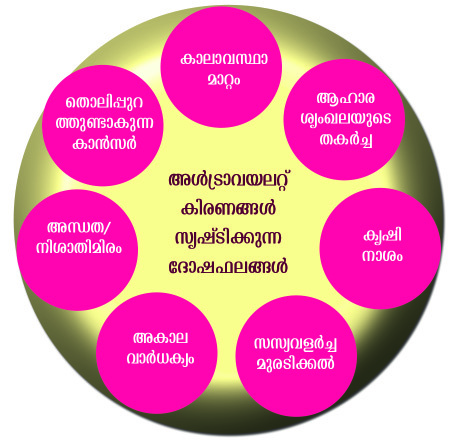

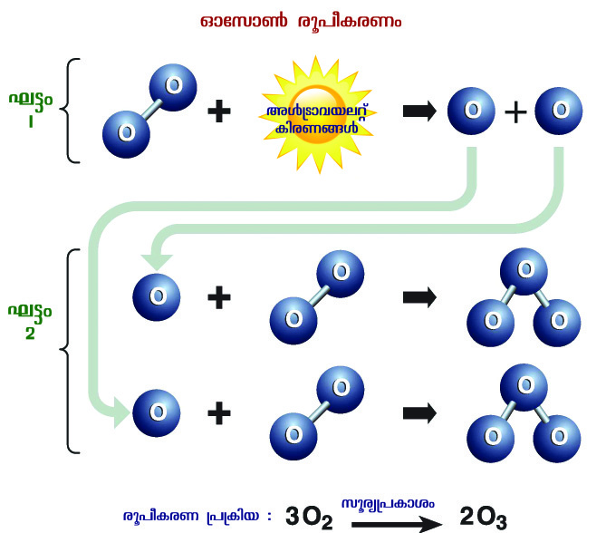
2345678901234567890123456789012123456789012345678901234567890121234567890123456789012345678901212345678901234567890123456789012123456789012345678901234567890121234567890
2345678901234567890123456789012123456789012345678901234567890121234567890123456789012345678901212345678901234567890123456789012123456789012345678901234567890121234567890
2345678901234567890123456789012123456789012345678901234567890121234567890123456789012345678901212345678901234567890123456789012123456789012345678901234567890121234567890
2345678901234567890123456789012123456789012345678901234567890121234567890123456789012345678901212345678901234567890123456789012123456789012345678901234567890121234567890
2345678901234567890123456789012123456789012345678901234567890121234567890123456789012345678901212345678901234567890123456789012123456789012345678901234567890121234567890
2345678901234567890123456789012123456789012345678901234567890121234567890123456789012345678901212345678901234567890123456789012123456789012345678901234567890121234567890
2345678901234567890123456789012123456789012345678901234567890121234567890123456789012345678901212345678901234567890123456789012123456789012345678901234567890121234567890
2345678901234567890123456789012123456789012345678901234567890121234567890123456789012345678901212345678901234567890123456789012123456789012345678901234567890121234567890
2345678901234567890123456789012123456789012345678901234567890121234567890123456789012345678901212345678901234567890123456789012123456789012345678901234567890121234567890
2345678901234567890123456789012123456789012345678901234567890121234567890123456789012345678901212345678901234567890123456789012123456789012345678901234567890121234567890
`qan-bpsS ]pX∏v
173
Ãm≥tU¿Uv VIII
Ãm≥tU¿Uv VIII
Hmtkm¨ cq]o-I-cWw
A¥-co-£-Øn¬ GI-tZiw 20 apX¬ 50 In.ao. hsc Dbc-Øn¬ kqcycivan-I-fnse
Aƒ{Sm-h-b-e‰v Inc-W-߃ km[m-cW HmIvkn-P≥ X∑m-{X-Isf hnL-Sn-∏n-°p-∂p.
Aßs\ GI At‰m-anI HmIvkn-P≥ X∑m-{X-Iƒ cq]-s∏-Sp-∂p.
GI At‰m-anI HmIvkn-P≥ X∑m-{X-Iƒ km[m-cW HmIvkn-P≥ X∑m-{X-I-tfmSp tN¿∂v
aq∂v B‰-ap≈ Hmtkm¨ hmXIw cq]wsIm≈p-∂p. Cu {]{In-bsb Hmtkm-Wo-I-
cWw (Ozonization) F∂p ]d-bp-∂p.
Cu cmk{]{In-b-bmWv Nn{X-Øn¬ \¬In-bn-´p-≈-Xv.
Aƒ{Sm-h-b-e‰v Inc-W-߃ D≠m-°n-tb-
°m-hp∂ tZmj-^-e-߃ Fs¥m-s°-
bm-sW∂v t\m°q. (Nn{Xw 10.7)
Nn{Xw 10.7
Page 54


2345678901234567890123456789012123456789012345678901234567890121234567890123456789012345678901212345678901234567890123456789012123456789012345678901234567890121234567890
2345678901234567890123456789012123456789012345678901234567890121234567890123456789012345678901212345678901234567890123456789012123456789012345678901234567890121234567890
2345678901234567890123456789012123456789012345678901234567890121234567890123456789012345678901212345678901234567890123456789012123456789012345678901234567890121234567890
2345678901234567890123456789012123456789012345678901234567890121234567890123456789012345678901212345678901234567890123456789012123456789012345678901234567890121234567890
2345678901234567890123456789012123456789012345678901234567890121234567890123456789012345678901212345678901234567890123456789012123456789012345678901234567890121234567890
2345678901234567890123456789012123456789012345678901234567890121234567890123456789012345678901212345678901234567890123456789012123456789012345678901234567890121234567890
2345678901234567890123456789012123456789012345678901234567890121234567890123456789012345678901212345678901234567890123456789012123456789012345678901234567890121234567890
2345678901234567890123456789012123456789012345678901234567890121234567890123456789012345678901212345678901234567890123456789012123456789012345678901234567890121234567890
2345678901234567890123456789012123456789012345678901234567890121234567890123456789012345678901212345678901234567890123456789012123456789012345678901234567890121234567890
2345678901234567890123456789012123456789012345678901234567890121234567890123456789012345678901212345678901234567890123456789012123456789012345678901234567890121234567890
1
1
1
1
1
1
1
1
1
1
`qan-bpsS ]pX∏v
174
kmaqlyimkv{Xw
kmaqlyimkv{Xw
Hmtkm¨ Zn\mNcWØns‚ `mKambn kvIqƒ kmaqly-
imkv{X ¢∫ns‚ B`n-ap-Jy-Øn¬ Hcp Hmtkm¨
kwc£W-dmen kwLSn∏n°q. AXn\mhiyamb
Nn{X߃, t]mÃdpIƒ, ap{ZmhmIy߃ XpSßnbh
¢mkn¬ Iq´mbn N¿®sNbvXv Xbmdm°pat√m.
d{^n-P-td-‰-dp-Iƒ, Fb¿I-≠o-j-\-dp-Iƒ, hnhn-[-X-cw kvt{]Iƒ,
A·n-i-a\ hmX-I-߃, s]bv‚ vXpS-ßn-bh t¢mtdm^vfqtdm-
Im¿_-Wp-Iƒ, lmtem¨ XpS-ßn-b hmX-I-ß-fpsS t{kmX- p-
I-fm-Wv. CØcw hmX-I-߃°v Zo¿L-Imew A¥-co-£-Øn¬
am‰-an-√msX \ne-\n¬°m≥ tijn-bp≠v. Db¿∂ hnXm-\-ß-fn-
te°v FØp∂ Cu hmX-I-߃ kqcy-\n¬\n∂p≈ Aƒ{Sm-h-
b-e‰v Inc-W-ß-fm¬ hnL-Sn®v t¢mdn≥, t{_man≥ XpS-ßnb hmX-
I-ßfmbn am‰-s∏-Sp∂p. Hmtcm t¢mdn≥ B‰-Øn\pw 1 e£-
tØmfw Hmtkm¨ X-∑m-{X-Isf hnL-Sn-∏n-°m≥ tijn-bp-≈-
Xmbn IW-°m-
°p∂p. t{_man-\m-Is´, CXns‚ 40 aS-ßpw.
C{]-Imcw A¥-co-£-Ønse Hmtkm¨ ]mfn-
bn-ep-≠m-Ip∂ timj-WsØ Hmtkm¨
kpjncw (Ozone hole) F∂phnfn-°p-∂p.
Hmtkm¨ ]mfn kwc-£n-°m≥...
Hmtkm¨ kwc£WØns‚ BhiyIX
kw_‘n®v Aht_m[w P\n∏n°m\pw
Hmtkm¨ timjWØn\v ImcWamtb°m-
hp∂
Dev]∂ßfpsS
D]tbmKw
\nb{¥n°m\pambn
F√mh¿jhpw
sk]v‰w_¿ 16 temI Hmtkm¨Zn\ambn
BNcn®phcp∂p.
tam¨{Sn-b¬ t{]mt´mt-Imƒ
Hmtkm¨ timj-W-Øn\v Imc-W-am-
Ip∂ \nc-h[n D¬∏∂-ßsf L´w L´-
ambn \ntcm-[n-°p-∂-Xn-\m-bp≈ A¥m-
cmjv{S DS-º-Sn-bm-Wv tam¨{Sn-b¬
t{]mt´m-tImƒ. Hmtkm¨]m-fn-bpsS
kwc-£-W-Øn-\mbn 1987 ¬ hnb-∂-bn¬
\S∂ D®-tImSnbpsS `mK-am-bmWv Cu
DS-º-Sn. Cu DS-º-Sn-bpsS \S-∏n-em-°-en-
eqsS A‚m¿´nIv apI-fnse Hmtkm¨]m-
fn-bpsS timjWw Ipd-bp-∂-Xmbn sXfn-
™n-´p-≠v.
A¥co£kwcN\bnse khntijXI-sf°pdn®pw AXnse
hnhn[ LSIßfpsS {]m[m\ysØ°pdn®pw t_m[y-ambt√m.
kwcN\sIms≠∂t]mse
Xs∂
khntijamb
LS\sIm≠pw \ΩpsS A¥co£w PohPme߃°v ta¬
\n¿WmbI kzm[o\w sNepØp∂p.
A¥co£LS\
`utam]cnXeØn¬\n∂v GI-tZiw 90 Intemao‰¿ Dbcw hsc
hmXIkwc-N\ Gsd-°psd Hcp-t]m-se-bm-Wv. A¥-co-£-Øns‚
Cu `mKsØ tlmtamkv^nb¿ (Homosphere) F∂p
Page 55
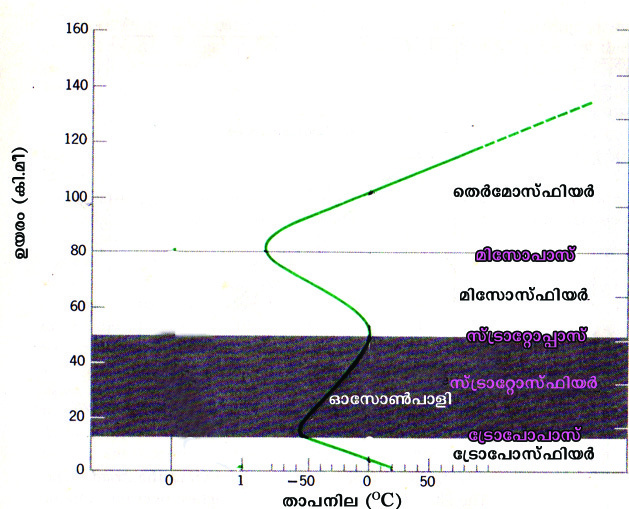


2345678901234567890123456789012123456789012345678901234567890121234567890123456789012345678901212345678901234567890123456789012123456789012345678901234567890121234567890
2345678901234567890123456789012123456789012345678901234567890121234567890123456789012345678901212345678901234567890123456789012123456789012345678901234567890121234567890
2345678901234567890123456789012123456789012345678901234567890121234567890123456789012345678901212345678901234567890123456789012123456789012345678901234567890121234567890
2345678901234567890123456789012123456789012345678901234567890121234567890123456789012345678901212345678901234567890123456789012123456789012345678901234567890121234567890
2345678901234567890123456789012123456789012345678901234567890121234567890123456789012345678901212345678901234567890123456789012123456789012345678901234567890121234567890
2345678901234567890123456789012123456789012345678901234567890121234567890123456789012345678901212345678901234567890123456789012123456789012345678901234567890121234567890
2345678901234567890123456789012123456789012345678901234567890121234567890123456789012345678901212345678901234567890123456789012123456789012345678901234567890121234567890
2345678901234567890123456789012123456789012345678901234567890121234567890123456789012345678901212345678901234567890123456789012123456789012345678901234567890121234567890
2345678901234567890123456789012123456789012345678901234567890121234567890123456789012345678901212345678901234567890123456789012123456789012345678901234567890121234567890
2345678901234567890123456789012123456789012345678901234567890121234567890123456789012345678901212345678901234567890123456789012123456789012345678901234567890121234567890
`qan-bpsS ]pX∏v
175
Ãm≥tU¿Uv VIII
Ãm≥tU¿Uv VIII
Nn{Xw 10.8
hnfn°p∂p. AXn-\p -ap-I-fn-te°v
hmXI kwc-N-\-bn¬ sFI-cq-]y-
an-√. AXn\m¬ 90 Intemao‰dn\v
apIfnembn ÿnXn sNøp∂
A¥co£`mKsØ sl‰tdm-
kv^nb¿ (Heterosphere) F∂p
hnfn°p∂p.
hnhn[ Dbcßfnse Xm]Øn\-\p-
k-cn®v A¥co£sØ hnhn[
afießfmbn Xncn®ncn°p∂p.
{][m\ A¥-co£afi-e-߃
GsXm-s°-sb∂pw `utam-]-cn-X-e-
Øn¬ \n∂v apI-fn-te°v Xm]-\n-
e-bn-ep-≠m-Ip∂ am‰-߃ Fß-
s\-sbm-s°-sb∂pw Nn{Xw (Nn{Xw
10.8)\nco-£n®v Is≠-Øq.
Hmtcm
A¥co£afieØn\pw
X\Xmb
Nne
khntijXIfp≠v. AXv Fs¥ms°sb∂pw Hmtcm afiehpw
\ap°v F{XtØmfw {]tbmP\{]ZamsW∂pw t\m°q.
t{Smt∏m-kv^n-b¿
`qan-tbmSv tN¿∂p ÿnXnsNøp∂ Cu A¥-co-£-a-fiew
GI-tZiw 13 Intem-ao-‰¿ Dbcw hsc hym]n-®n-cn-°p∂-p.
a[y-tcJm {]tZ-iØv hmbp NqSp-]n-Sn®v Db-c-ß-fnt-e°v
hym]n-°p-∂-Xn-\m¬ ChnsS t{Smt∏m-kv^n-b-dn\v IqSp-X¬
Db-c-ap-≠v (GI-tZiw 18 In.ao. hsc).
taLcq]oIcWw, ag, a™v, Im‰v,
CSnan∂¬ XpSßnb A¥co£{]Xn`m-
kßsf√mw Cu afieØn-emWv kw`-
hn-°p-∂Xv.
t{Smt]m-kv^n-b-dn¬ Hmtcm 165 ao‰¿ Db-
c-Øn\pw Hcp Un{Kn sk¬jykv F∂
tXmXn¬ Xm]w Ipd-™p-h-cp-∂p.
CXns\ {Ia-amb Xm]-\-jvS-\n-c°v
(Normal Lapse Rate) F∂p hnfn-°p-∂p.
kw{IaWtaJeIƒ
{][m\ A¥co£afießsf XΩn¬
th¿Xn-cn-°p∂ A¥-co-£-`m-K-ß-sf-
bmWv kw{I-aWtaJ-e-Iƒ F∂p ]d-
bp∂-Xv. t{Smt∏m-kv^n-b¿, kv{Smt‰m-kv^n-
b¿, antkm-kv^n-b¿, sX¿tam-kv^n-b¿
F∂o afi-e-߃°nS-bn-embn bYm-
{Iaw t{Smt∏m-]m-kv, kv{Smt‰m-]m-kv,
antkm-]mkv F∂o kw{I-aWtaJ-e-I-fp-
≠v.
Page 56
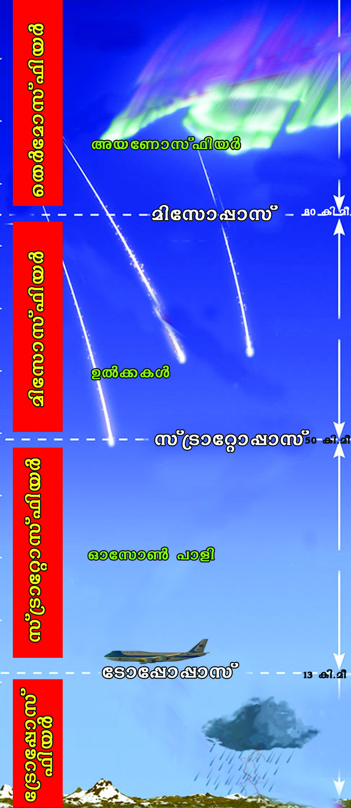


2345678901234567890123456789012123456789012345678901234567890121234567890123456789012345678901212345678901234567890123456789012123456789012345678901234567890121234567890
2345678901234567890123456789012123456789012345678901234567890121234567890123456789012345678901212345678901234567890123456789012123456789012345678901234567890121234567890
2345678901234567890123456789012123456789012345678901234567890121234567890123456789012345678901212345678901234567890123456789012123456789012345678901234567890121234567890
2345678901234567890123456789012123456789012345678901234567890121234567890123456789012345678901212345678901234567890123456789012123456789012345678901234567890121234567890
2345678901234567890123456789012123456789012345678901234567890121234567890123456789012345678901212345678901234567890123456789012123456789012345678901234567890121234567890
2345678901234567890123456789012123456789012345678901234567890121234567890123456789012345678901212345678901234567890123456789012123456789012345678901234567890121234567890
2345678901234567890123456789012123456789012345678901234567890121234567890123456789012345678901212345678901234567890123456789012123456789012345678901234567890121234567890
2345678901234567890123456789012123456789012345678901234567890121234567890123456789012345678901212345678901234567890123456789012123456789012345678901234567890121234567890
2345678901234567890123456789012123456789012345678901234567890121234567890123456789012345678901212345678901234567890123456789012123456789012345678901234567890121234567890
2345678901234567890123456789012123456789012345678901234567890121234567890123456789012345678901212345678901234567890123456789012123456789012345678901234567890121234567890
1
1
1
1
1
1
1
1
1
1
`qan-bpsS ]pX∏v
176
kmaqlyimkv{Xw
kmaqlyimkv{Xw
t{Smt∏m-kv^n-b-dn\p apI-fn-ep≈ kw{I-aWtaJ-esb
t{Smt∏m-]mkv F∂p hnfn-°p-∂p.
$ Du´n, sImssS-°-\m¬, aq∂m¿ XpS-ßnb {]tZ-i-ß-fn¬ Xmc-
X-tay\ Ipd™ Xm]-\ne A\p-`-h-s∏-Sp-∂Xv F¥p-sIm-≠m-
sW∂v ]d-bmtam?
$ kap-{Z-\n-c-∏n¬ Xm]-\ne 32 Un{Kn sk¬jykv BsW-¶n¬
B\-ap-Sn-bnse (2695 ao‰¿) Xm]-\ne F{X-bm-bn-cn°pw?
kv{Smt‰m-kv^n-b¿
t{Smt∏m-]m-kn¬ XpSßn `qan-bn¬\n∂v GI-tZiw 50
Intem-ao-‰¿ Dbcw hsc hym]n-®n-cn-°p-∂p.
kv{Smt‰m-kv^n-b-dns‚ Xmgv∂ hnXm-\-ß-fn¬ Dbcw
IqSp-∂-Xn-\-\p-k-cn®v Xm]-\n-e-bn¬ am‰w A\p-`-h-s∏-
Sp∂n√. Cu taJ-esb ka-Xm]taJe F∂-dn-b-s∏-Sp-
∂p.
Hmtkm¨]mfn lm\n-I-c-ß-fmb Aƒ{Sm-h-b-e‰v Inc-
W-ßsf BKn-cWw sNbvXv `qanbn-se-ØmsX \nb-
{¥n-°p∂p.
sXfn™ A¥-co-£-ÿn-Xnbpw hmbp Ad-I-fpsS
Akm-∂n-[yhpsIm≠v P‰v hnam-\-ß-fpsS kpK-a-k-
©mcw km[y-am-°p-∂p.
kv{Smt‰m-kv^n-b-dn\p apI-fn-ep≈ kw{I-aWtaJ-esb
kv{Smt‰m-]mkv F∂p hnfn-°p-∂p.
antkm-kv^n-b¿
`qan-bn¬\n∂v 50 apX¬ 80 Intem-ao-‰¿ hsc Db-c-Øn¬
hym]n-®n-cn-°p-∂p.
DbcØn\\pkcn®v Xm]w Ipd-™phcp-∂p. A¥-co-
£-Ønse G‰hpw Ipd™ Xm]-\ne antkm-]m-kn¬
A\p-`-h-s∏-Sp∂p (80°C apX¬ -100°C hsc).
D¬°-Iƒ antkm-kv^nb-dn¬ {]th-in-°p-∂-Xn-eqsS
L¿j--WØm¬ IØn-®m-c-am-Ip-∂p.
antkm-kv^n-b-dn\p apI-fn-ep≈ kw{I-aWtaJ-e
antkm-]mkv F∂dn-b-s∏-Sp-∂p.
Page 57


2345678901234567890123456789012123456789012345678901234567890121234567890123456789012345678901212345678901234567890123456789012123456789012345678901234567890121234567890
2345678901234567890123456789012123456789012345678901234567890121234567890123456789012345678901212345678901234567890123456789012123456789012345678901234567890121234567890
2345678901234567890123456789012123456789012345678901234567890121234567890123456789012345678901212345678901234567890123456789012123456789012345678901234567890121234567890
2345678901234567890123456789012123456789012345678901234567890121234567890123456789012345678901212345678901234567890123456789012123456789012345678901234567890121234567890
2345678901234567890123456789012123456789012345678901234567890121234567890123456789012345678901212345678901234567890123456789012123456789012345678901234567890121234567890
2345678901234567890123456789012123456789012345678901234567890121234567890123456789012345678901212345678901234567890123456789012123456789012345678901234567890121234567890
2345678901234567890123456789012123456789012345678901234567890121234567890123456789012345678901212345678901234567890123456789012123456789012345678901234567890121234567890
2345678901234567890123456789012123456789012345678901234567890121234567890123456789012345678901212345678901234567890123456789012123456789012345678901234567890121234567890
2345678901234567890123456789012123456789012345678901234567890121234567890123456789012345678901212345678901234567890123456789012123456789012345678901234567890121234567890
2345678901234567890123456789012123456789012345678901234567890121234567890123456789012345678901212345678901234567890123456789012123456789012345678901234567890121234567890
`qan-bpsS ]pX∏v
177
Ãm≥tU¿Uv VIII
Ãm≥tU¿Uv VIII
sX¿tam-kv^n-b¿
GI-tZiw 80 apX¬ 600 Intem-ao-‰¿ hsc
Db-c-Øn¬ hym]n-®ncn-°p-∂p.
DbcpwtXmdpw Xm]\ne KWyambn
h¿[n°p∂p.
sX¿tam-kv^n-b-dns‚ Xmgv∂ `mKsØ
Ab-tWm-kv^n-b-sd∂v hnfn-°p-∂p.
Ab-tWm-kv^n-b¿ tdUntbm ]cn-]m-Sn-
I-fpsS Zo¿L-Zqc {]t£-]-Ww km[y-
am-°p∂p.
Ab-tWm-kv^n-b¿
A¥-co-£-Øns‚ GI-tZiw 80 apX¬ 400
Intem-ao-‰¿ hsc Db-c-Øn¬ Aƒ{Sm-h-b-
e-‰v, FIvkv-˛td XpS-ßn-b Xo{h kqcy-c-
ivan-Iƒ hmXI X∑m-{X-Isf Atbm-Wp-I-
fm°n am‰p-∂p. Cu {]{In-bsb Atbm-
Wo-I-cWw F∂pw Cu afi-esØ Ab-
tWm-kv^n-b¿ F∂pw hnfn-°p∂p. Atbm-
Wp-Iƒ°v sshZyp-Xnsb IS-Øn-hn-Sm≥ Ign-
bpw. tdUntbmXcw-K-߃ sshZypX-
Im¥nI Xcw-K-ß-fm-b-Xn-\m¬ Cu taJe
tdUntbmXcw-K-ßfpsS Zo¿L-Zqc {]t£-
]Ww km[y-am-°p-∂p.
h¿°vjo‰v
Xmsg sImSp-Øn-´p≈ {]kvXm-h-\-Iƒ Hmtcm∂pw GtXXv A¥-co£afi-e-
hp-ambn _‘-s∏-´n-cn-°p-∂p-sh∂v Xncn-®-dn™v tbmPn® If-ß-fn¬ Sn°v
()tcJ-s∏-Sp-Øp-I.
t{Smt]m
kv{Smt‰m
antkm
sX¿tam
kv^nb¿
kv^nb¿
kv^nb¿
kv^nb¿
$ Db-c-Øn-\-\p-k-cn®v Xm]w h¿[n-
°p∂p.
$ Db-cØn-\-\p-k-cn®v Xm]w Ipd-bp∂p.
$ Imem-h-ÿm{]Xn-`m-k-ß-ƒ D≠m-
Ip∂ afiew.
$ Aƒ{Sm-h-b-e‰v Inc-W-ßsf XS™p
\n¿Øp-∂p.
$ P‰v hnam-\-߃°v kpK-a-ambn k©-
cn-°m≥ Ign-bp-∂p.
$ D¬°m-]-X-\-Øn¬\n∂p `qansb
kwc-£n-°p-∂p.
$ G‰hpw Ipd™ Xm]-\ne tcJ-s∏-Sp-
Øp-∂p.
$ Atbm-Wo-I-cWw \S-°p∂ afi-ew.
$ tdUntbmXcw-K-ßsf {]Xn-^-en-∏n-
°p-∂p.
Page 58

2345678901234567890123456789012123456789012345678901234567890121234567890123456789012345678901212345678901234567890123456789012123456789012345678901234567890121234567890
2345678901234567890123456789012123456789012345678901234567890121234567890123456789012345678901212345678901234567890123456789012123456789012345678901234567890121234567890
2345678901234567890123456789012123456789012345678901234567890121234567890123456789012345678901212345678901234567890123456789012123456789012345678901234567890121234567890
2345678901234567890123456789012123456789012345678901234567890121234567890123456789012345678901212345678901234567890123456789012123456789012345678901234567890121234567890
2345678901234567890123456789012123456789012345678901234567890121234567890123456789012345678901212345678901234567890123456789012123456789012345678901234567890121234567890
2345678901234567890123456789012123456789012345678901234567890121234567890123456789012345678901212345678901234567890123456789012123456789012345678901234567890121234567890
2345678901234567890123456789012123456789012345678901234567890121234567890123456789012345678901212345678901234567890123456789012123456789012345678901234567890121234567890
2345678901234567890123456789012123456789012345678901234567890121234567890123456789012345678901212345678901234567890123456789012123456789012345678901234567890121234567890
2345678901234567890123456789012123456789012345678901234567890121234567890123456789012345678901212345678901234567890123456789012123456789012345678901234567890121234567890
2345678901234567890123456789012123456789012345678901234567890121234567890123456789012345678901212345678901234567890123456789012123456789012345678901234567890121234567890
1
1
1
1
1
1
1
1
1
1
`qan-bpsS ]pX∏v
178
kmaqlyimkv{Xw
kmaqlyimkv{Xw
`uam¥co£Øns‚ hntijLS\bpw kwcN\bpw \ΩpsS
\ne\n¬∏ns\ \n¿WmbIambn kzm[o\n°p∂p. hcm\ncn°p∂
XeapdIƒ°pw Pohn°m≥ tbmKyamb Hcp temIap≠m-bn-cn-°-
W-sa-¶n¬ A¥co£Øns‚ Cu temeamb k¥pe\w \mw
\ne\n¿Øntb aXnbmhq. AXn\v A\pKpWamb Hcp PohnX{Iaw
\ap°v ]men°mw.
A¥-co£w
A¥-co£
kwc-N\
lcn-X-Kr-l
-{]-`mhw
A¥-co£
LS\
hmX-I-߃
s]mSn-]-S-e-߃
Pemwiw
t{Smt]m-kv^n-b¿
BtKm-f-
Xm-]\w
kv{Smt‰m-kv^n-b¿
antkm-kv^n-b¿
sX¿tam-kv^n-b¿
hmXI߃, s]mSn]Se߃, \ocmhn F∂nhbmWv
A¥co£Ønse {][m\ LSI߃.
A¥co£kwcN\bnse Hmtcm LSIhpw Pohs‚
\ne\n¬∏ns\ kzm[o\n°p∂p.
Nne A¥co£hmXI߃ `uahnIncWsØ XS™p \n¿Øn
`utam]cnXeXm]w IpdbmsX \ne\n¿Øp∂p.
Page 59

2345678901234567890123456789012123456789012345678901234567890121234567890123456789012345678901212345678901234567890123456789012123456789012345678901234567890121234567890
2345678901234567890123456789012123456789012345678901234567890121234567890123456789012345678901212345678901234567890123456789012123456789012345678901234567890121234567890
2345678901234567890123456789012123456789012345678901234567890121234567890123456789012345678901212345678901234567890123456789012123456789012345678901234567890121234567890
2345678901234567890123456789012123456789012345678901234567890121234567890123456789012345678901212345678901234567890123456789012123456789012345678901234567890121234567890
2345678901234567890123456789012123456789012345678901234567890121234567890123456789012345678901212345678901234567890123456789012123456789012345678901234567890121234567890
2345678901234567890123456789012123456789012345678901234567890121234567890123456789012345678901212345678901234567890123456789012123456789012345678901234567890121234567890
2345678901234567890123456789012123456789012345678901234567890121234567890123456789012345678901212345678901234567890123456789012123456789012345678901234567890121234567890
2345678901234567890123456789012123456789012345678901234567890121234567890123456789012345678901212345678901234567890123456789012123456789012345678901234567890121234567890
2345678901234567890123456789012123456789012345678901234567890121234567890123456789012345678901212345678901234567890123456789012123456789012345678901234567890121234567890
2345678901234567890123456789012123456789012345678901234567890121234567890123456789012345678901212345678901234567890123456789012123456789012345678901234567890121234567890
`qan-bpsS ]pX∏v
179
Ãm≥tU¿Uv VIII
Ãm≥tU¿Uv VIII
a\pjys‚ Nne {]h¿Ø\ßfneqsSbmWv lcnXKrl-
hmXI߃ IqSpXepw D≠mIp∂Xv.
lcnXKrl{]`mhw BtKmfXm]\Øn\v ImcWamIp∂p.
A¥co£Ønse Hmtkm¨]mfnbmWv PohafiesØ
Aƒ{Smhbe‰v civanIfn¬\n∂p kwc£n°p∂Xv.
A¥co£Øns‚ khntijLS\bv°v ASnÿm\w
Xm]kmlNcyßfmWv.
Hmtcm A¥co£afiehpw \ap°v Gsd {][m\amWv.
A¥-co-£-Ønse hmX-I-߃, Pemw-iw, s]mSn-]-S-e-߃
F∂nhb-psS {]m[m-\yw hnhcn°p-∂p.
ss\{S-P≥, HmIvkn-P≥, Im¿_¨ U-tbm-IvsskUv XpS-ßnb
hmX-I-߃ Pohs‚ \ne-\n¬∏n\v F{X-am{Xw {][m-\-s∏-´-
Xm-sW∂v hni-Z-am-°p-∂p.
A¥-co-£-Ønse t\¿Ø s]mSn-]-S-e-ßfpsS {]m[m\yw
ka¿∞n-°p-∂p.
lcn-X-Kr-l-{]-`m-h-Øns‚ KpW-tZm-j-h-i-߃ hni-I-e\w
sNøp-∂p.
BtKm-f-Xm-]\w \nb-{¥n°-p∂Xn-\p≈ _Z-ep-Iƒ \n¿tZ-in-
°p-∂p.
Hmtkm¨kwc-£W {]h¿Ø-\-ß-fn¬ G¿s∏-Sp-∂p.
A¥-co-£-Øn¬ Db-c-Øn-\-\p-k-cn-®p≈ Xm]-hy-Xym-k-߃
{Km^v cq]-Øn¬ Nn{Xo-I-cn-°p-∂p.
A¥co£afi-e-ß-f-psS {]m[m\yw hni-Zo-I-cn-°p-∂p.
Xmsg ]d-bp-∂-h-bn¬ sX‰mb {]kvXm-h\-tbXv?
F. A¥-co-£hkvXp-°-fn¬ Gdnb ]¶pw `qan-tbm-SSpØv
ÿnXnsNøp-∂p.
_n. Db¿∂- Xm-]-\n-ebpw Pem-i-b-ß-fpsS kmao-]yhpw A¥-
co£ Pemwiw Iq´p-∂p.
kn. HmIvkn-P-\mWv A¥-co-£-Øn¬ G‰hpw IqSp-X-embn AS-
ßn-bn-´p-≈- hm-X-Iw.
Un. taL-cq-]o-I-c-W-Øn\v A¥-co-£-Ønse t\¿Ø -s]m-Sn-]-
S-e-߃ klm-b-I-am-Ip-∂p.
Page 60
2345678901234567890123456789012123456789012345678901234567890121234567890123456789012345678901212345678901234567890123456789012123456789012345678901234567890121234567890
2345678901234567890123456789012123456789012345678901234567890121234567890123456789012345678901212345678901234567890123456789012123456789012345678901234567890121234567890
2345678901234567890123456789012123456789012345678901234567890121234567890123456789012345678901212345678901234567890123456789012123456789012345678901234567890121234567890
2345678901234567890123456789012123456789012345678901234567890121234567890123456789012345678901212345678901234567890123456789012123456789012345678901234567890121234567890
2345678901234567890123456789012123456789012345678901234567890121234567890123456789012345678901212345678901234567890123456789012123456789012345678901234567890121234567890
2345678901234567890123456789012123456789012345678901234567890121234567890123456789012345678901212345678901234567890123456789012123456789012345678901234567890121234567890
2345678901234567890123456789012123456789012345678901234567890121234567890123456789012345678901212345678901234567890123456789012123456789012345678901234567890121234567890
2345678901234567890123456789012123456789012345678901234567890121234567890123456789012345678901212345678901234567890123456789012123456789012345678901234567890121234567890
2345678901234567890123456789012123456789012345678901234567890121234567890123456789012345678901212345678901234567890123456789012123456789012345678901234567890121234567890
2345678901234567890123456789012123456789012345678901234567890121234567890123456789012345678901212345678901234567890123456789012123456789012345678901234567890121234567890
1
1
1
1
1
1
1
1
1
1
`qan-bpsS ]pX∏v
180
kmaqlyimkv{Xw
kmaqlyimkv{Xw
BtKm-f-Xm-]-\-Øn¬ Im¿_¨ U-tbm-Ivssk-Uns‚ ]¶v
hy‡-am-°p-I.
lcn-X-Kr-lhmX-I-߃ h¿[n-°p-∂Xv Pohs‚ \ne-\n¬∏n\v
tZmj-I-c-ambn `hn-t®-°mw. Cu {]kvXm-h\ km[q-I-cn-°p-I.
A¥-co-£-a-fi-e-߃ Hmtcm∂pw \ap°v {]tbm-P-\-{]-Z-am-Ip-
∂p. ka¿∞n-°pI.
Hmtkm¨Zn-\m-Nm-c-W-Øns‚ {]k-‡n-sb¥v?
kvIqƒhf-∏nepw ho´p-h-f-∏nepw hr£-ssØ- \´p hf¿ØpI.
A¥-co£hpambn _‘-s∏´v ]c-am-h[n H_vP-IvSohv -tNm-Zy-
߃ ]mT-`mKsØ ASn-ÿm-\-am°n Xbm-dm-°p-I. ¢mkn¬
{]ivt\m-Øcn kwL-Sn-∏n-°p-I.
A¥-co£LS\ hnh-cn-°p∂ Nn{Xw Nm¿´vt]-∏-dn¬ ]I¿Øn
kmaq-ly-im-kv{X-em-_n¬ {]Z¿in-∏n-°p-I.
]q¿W-ambn
`mKn-I-ambn
sa®-s∏-
tS-≠-Xp≠v
A¥co£ k¥p-e-\-Øn¬ kky-߃ hln-
°p∂ ]¶v t_m[y-am-bn.
hmX-I-߃, s]mSn-]-S-e-߃, Pemwiw F∂n-
h-bpsS {]k‡n F\n°v hnh-cn-°m≥ Ign-
bpw.
lcn-X-Kr-l-hm-X-I-ß-fpw Hmtkm¨ hn\m-iI
hmX-I-ßfpw A¥-co-£-Øn-se-Øn-°p∂
h≥tXm-Xn-ep≈ a\p-jy-{]-h¿Ø-\-߃ sNdp-
°m-\p≈ at\m-`mhw F∂n¬ cq]-s∏-´p.
A¥-co£afi-e-߃ Hmtcm∂pw hyXykvX
coXn-bn¬ Pohs‚ \ne-\n¬∏n\v klm-b-I-am-
Ip-sa∂v a\- n-em-°m-\m-bn.
Bi-b-߃ {Kln-°p-∂-Xn\v ]mT-`m-KsØ
Nn{X-߃, ]´n-I-Iƒ, {]h¿Ø-\-߃ F∂nh
Rm≥ {]tbm-P-\-s∏-Sp-Øn.